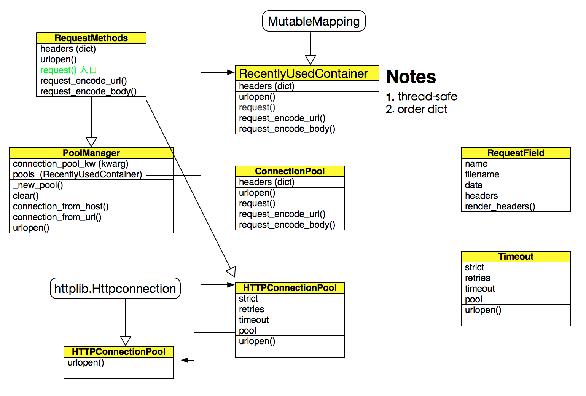
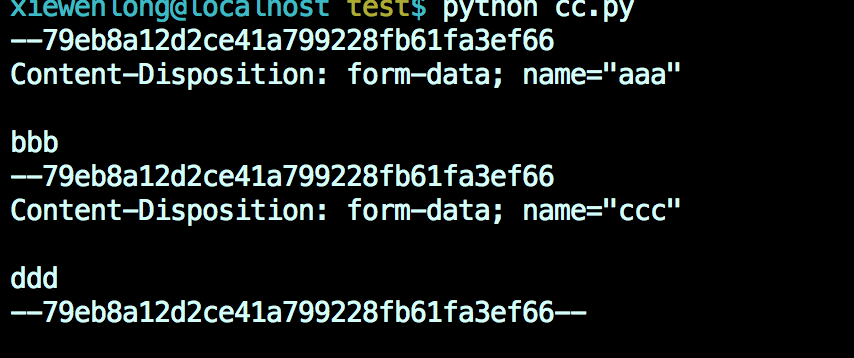

urllib3 是一个python版的http请求库，跟urllib比，它支持 文件上传, 重用连接 和 retry 功能
调用例子:
import urllib3
http = urllib3.PoolManager()
r = http.request('GET', 'http://example.com/')
print r.status
print r.headers['server']
Warning
注意， urllib3 在创建TCP连接的时候，会默认把 Nagle 算法禁掉, 这也是http客户端的普遍做法
urllib3 是对 httplib 的包装， 发请求的时候，拼凑http请求; 收到回复的时候，解析response; timeout 也是用httplib 库的timeout参数
用urllib3 库发POST请求的时候， urllib3 使用multipart格式来传递参数， 所以如果传:
{'aaa': 'bbb',
'ccc': 'ddd'}
则发出的请求是这样的格式:
Warning
这样会造成请求包较大， 因为它把多个参数分在多个part里. requests 库没有这个问题